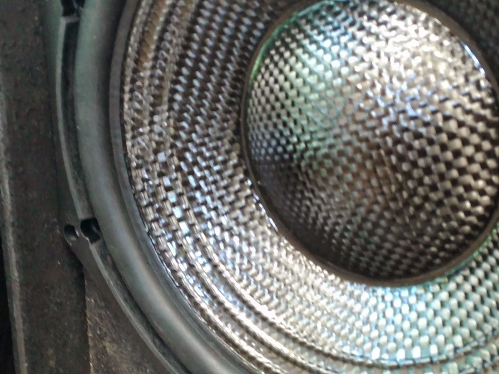
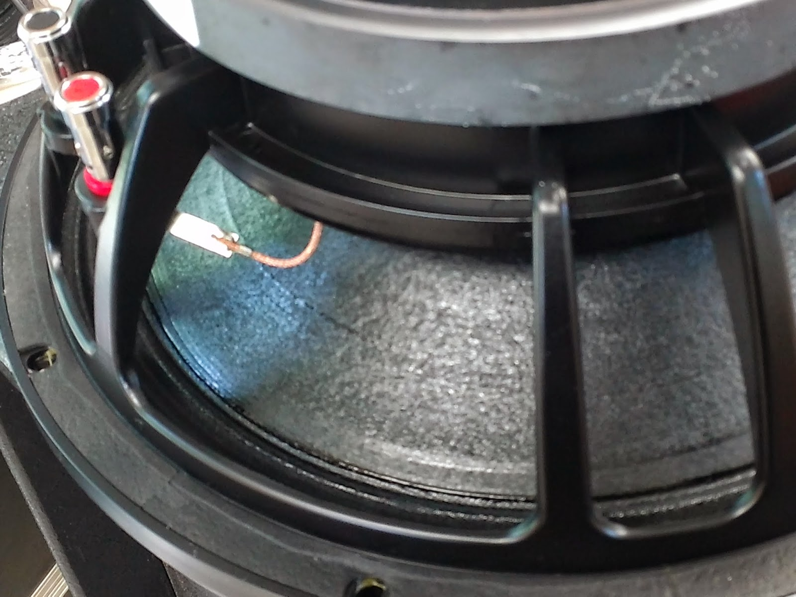

On the bench is a new carbon-fibre 12-inch driver, still in its box from the summer shipment. The first listen was promising enough that we decided to upgrade the LouReed systems.
This summer the shipment of our brand-new carbon-fibre speakers finally arrived. The first listening test worked out quite promising, so we decided to upgrade our LouReed systems with these babies.
Nico is going to use a set of these speakers for some complicated acoustic performances during itgwo, so the design goal of the adjusted filters would emphasise producing a clear, natural sound. As opposed to rocking your guts with, say, Rammstein. Probably Sebastiaan will call this boring (I guess). :)


By looking at the speaker you might expect a really full bottom end, with long-excursion bangs like car hi-fi speakers do. Not so! Fortunately, in this case, because that would also bring a lot of intermodulation distortion. Think thumping yourself on the chest while singing. Not what we are looking for here.
So why a rubber surround? As is the case with all stiff materials in speaker design, they surely sound a lot better: a stiffer cone gives stiffer piston movement and less break-up distortion. But when they do break up — and at our levels they always do — horror. Remember the 2-inch titanium versus 2-inch aluminium driver diaphragm "upgrade" problems? Or the special sound of that A-brand line array with yellow speakers for everything, when you hit it really hard? Well, here comes the genius of our Chinese friends: the rubber surround absorbs those hard break-up modes. Brilliant.
I also tested another speaker in the same cabinet. From the front the cone looks like your standard 12-inch guitar speaker. Sound-wise this gives you that nice zzhangg you are looking for in metal guitar à la Rammstein. Not that pak-pak from a modern plastic-coated speaker (think "French" PA). So what is the Chinese ingenuity here? Back coating! All the advantages of a stiffer cone by coating, without the ugly break-up. Again brilliant.


So in fact we now have two recipes for our LouReed systems. Does this mean different magnitude/phase slopes of the overall response? No, certainly not; the final results show quite similar curves. Does this mean different EQ is needed to match or linearise the responses? No, also certainly not; in both designs zero EQ was applied. (To the speaker, that is.) Surely different program material makes me want to apply different micro-EQ (no more than 3 dB, Q < 2), but I always end up bypassing it again.
Which will have to bring me to the next topic:
Distortion matching as a design goal in loudspeaker tuning
Oh, euh, yes, by the way: all the time we are talking distortion here, I mean that very-fine-grained, hardly noticeable but still quite important, emotion-wise, effect for which I don't know how to quantify it other than by using my ears...